Mustafa Kemal Atatürk
Mustafa Kemal Atatürk, Türkiye Cumhuriyeti'nin kurucusu ve ilk cumhurbaşkanıdır. Türk milletinin bağımsızlığı için mücadele etmiş, Millî Mücadele'ye liderlik etmiş ve yeni Türk devletinin kurulmasında önemli rol oynamıştır. Atatürk, ülkenin gelişmesi için eğitim, bilim, hukuk ve çağdaşlaşmaya önem vermiştir.
Onun hayatı, zor koşullar karşısında kararlılıkla çalışmanın ve milletin bağımsızlığı için birlik olmanın önemli bir örneğidir. Gerçekleştirilen yenilikler, Türkiye'nin siyasi ve toplumsal yapısında büyük değişimlere katkıda bulunmuştur.
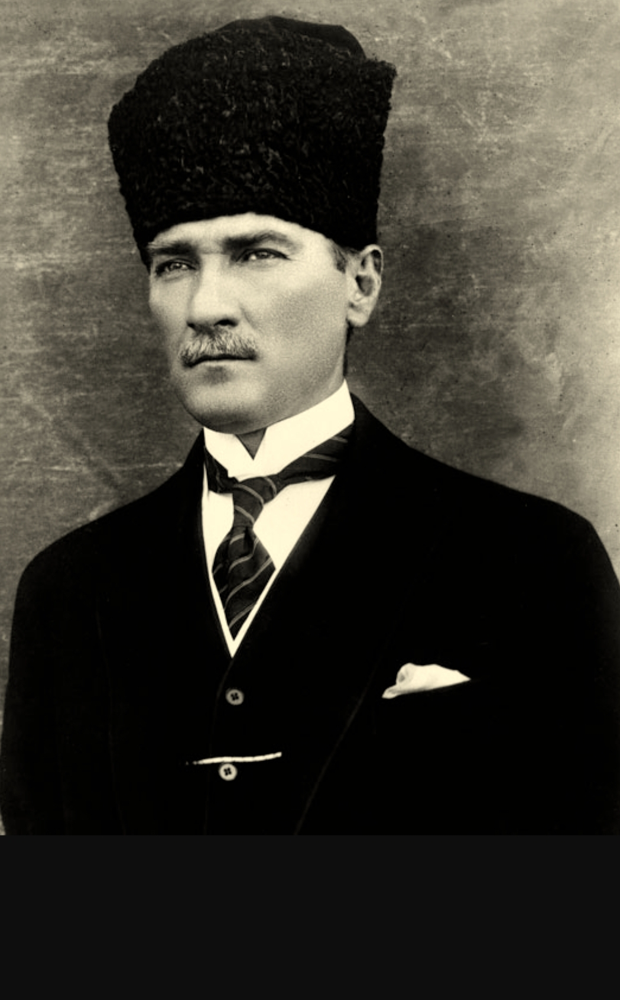
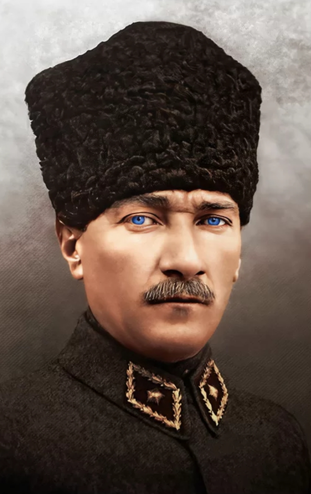
1. Atatürk'ün Hayatı ve Eğitim Yılları
Mustafa Kemal Atatürk, 1881 yılında Selanik'te doğdu. Babası Ali Rıza Efendi, annesi Zübeyde Hanım'dır. Makbule Atadan ise kız kardeşidir. Çocukluk yıllarında eğitimine önem verdi ve farklı okullarda öğrenim gördü. Önce Mahalle Mektebine, ardından Şemsi Efendi Mektebine devam etti.
Daha sonra Selanik Askerî Rüştiyesinde okudu. Matematik öğretmeni, onun başarılı çalışmalarını fark ederek kendisine Kemal adını verdi. Manastır Askerî İdadisindeki öğreniminin ardından İstanbul'da Harp Okulunu ve Harp Akademisini bitirdi. Bu eğitimler onun askerlik mesleğinde ilerlemesine ve liderlik özelliklerini geliştirmesine yardımcı oldu.
Atatürk yalnızca askerî konularla ilgilenmedi; tarih, toplum, eğitim ve ülkenin geleceği üzerine de düşündü. Öğrenmeye ve kendini geliştirmeye verdiği önem, ilerleyen yıllarda gerçekleştireceği çalışmalara temel oluşturdu.
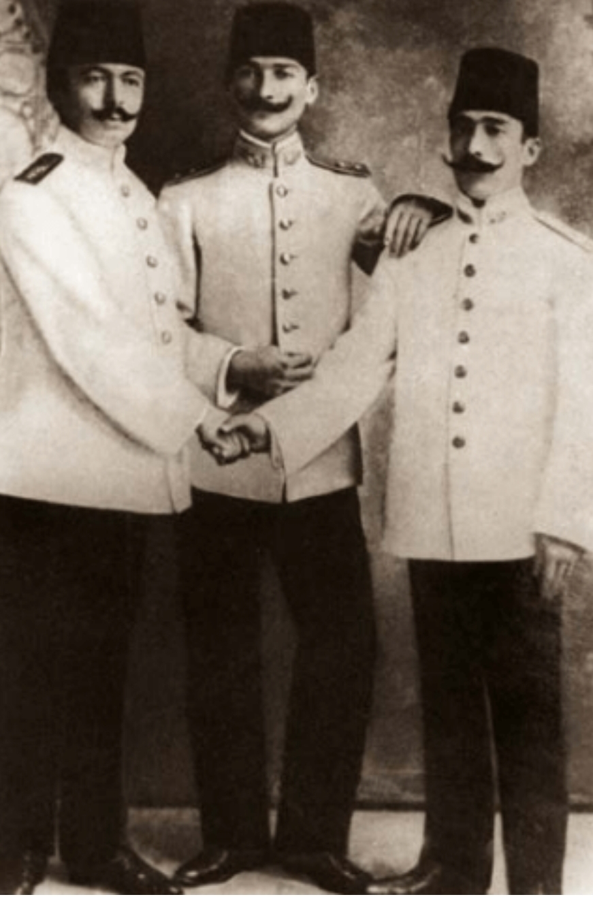
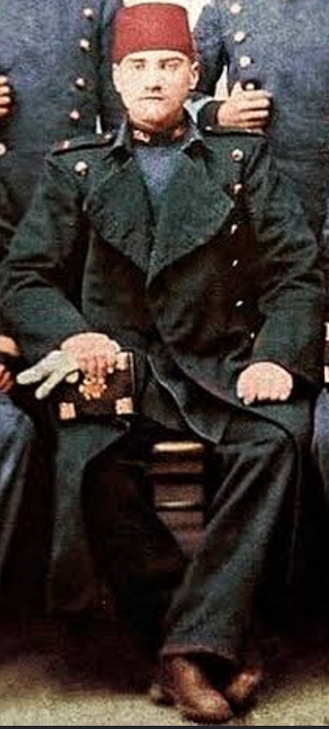
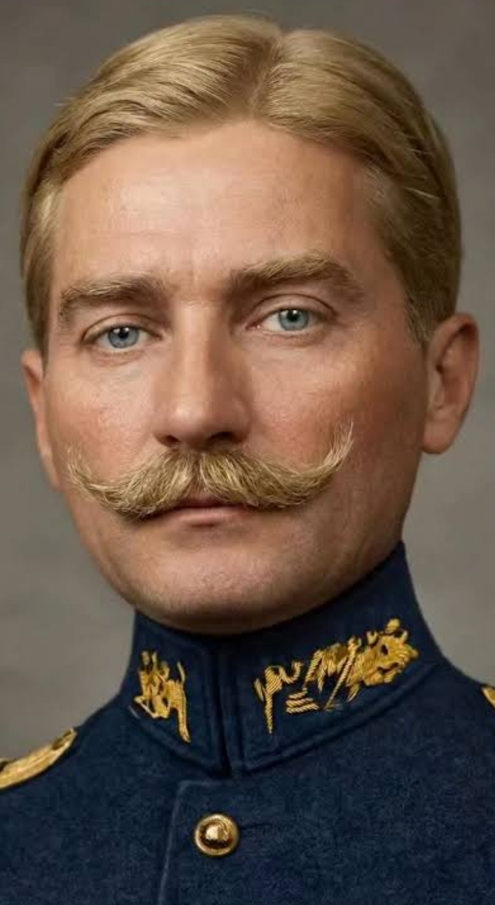
2. Askerlik ve Millî Mücadele
Mustafa Kemal, askerî eğitimini tamamladıktan sonra Osmanlı ordusunda görev yaptı. Trablusgarp Savaşı ve Balkan Savaşları döneminde çeşitli görevler üstlendi. Birinci Dünya Savaşı sırasında Çanakkale Cephesi'nde gösterdiği başarılarla tanındı. Özellikle 1915 yılında Anafartalar bölgesindeki askerî liderliğiyle öne çıktı.
Birinci Dünya Savaşı'nın ardından Osmanlı Devleti yenildi ve ülkenin çeşitli bölgeleri işgal edilmeye başladı. Mustafa Kemal, milletin bağımsızlığını kazanması amacıyla mücadeleye girişti. 19 Mayıs 1919'da Samsun'a çıktı. Amasya Genelgesi yayımlandı; Erzurum ve Sivas kongrelerinde Millî Mücadele'nin hedefleri ve örgütlenmesi üzerinde duruldu.
23 Nisan 1920'de Türkiye Büyük Millet Meclisi Ankara'da açıldı. Kurtuluş Savaşı boyunca Türk ordusu çeşitli cephelerde mücadele etti. Sakarya Meydan Muharebesi ve Büyük Taarruz önemli dönüm noktaları oldu. Kazanılan başarılar, Türkiye'nin bağımsızlığının sağlanmasında belirleyici rol oynadı.
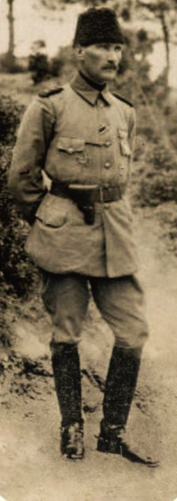
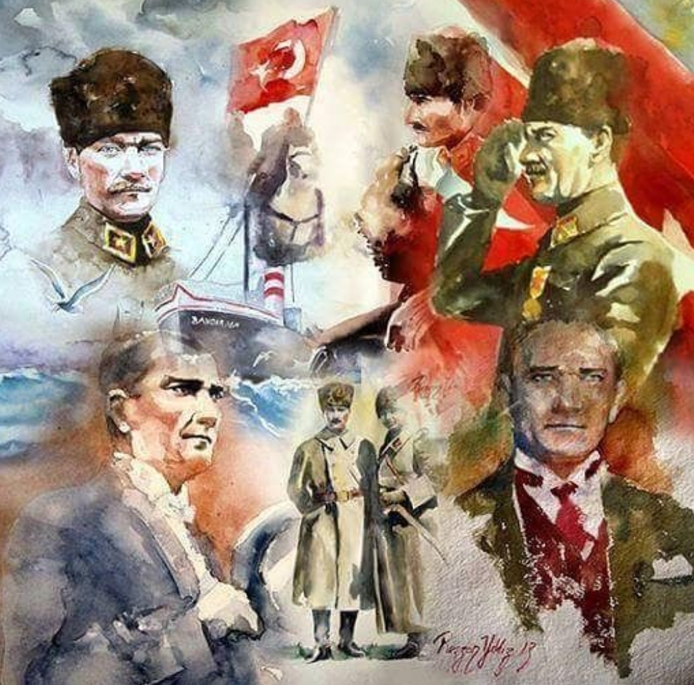
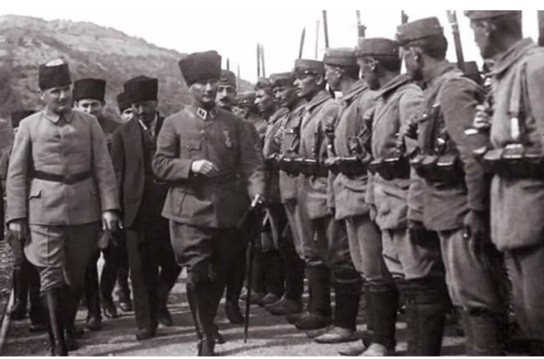
3. Cumhuriyet ve İnkılaplar
Millî Mücadele'nin başarıya ulaşmasının ardından yeni devletin yönetim biçimi belirlendi. 29 Ekim 1923'te Cumhuriyet ilan edildi ve Mustafa Kemal Atatürk Türkiye Cumhuriyeti'nin ilk cumhurbaşkanı oldu. Cumhuriyet yönetiminde egemenliğin millete ait olması temel ilkelerden biridir.
Atatürk döneminde eğitim, hukuk, kültür ve toplumsal yaşam alanlarında birçok yenilik gerçekleştirildi. 1924 yılında Tevhid-i Tedrisat Kanunu kabul edilerek eğitim kurumlarının birleştirilmesi amaçlandı. 1926 yılında Türk Medeni Kanunu kabul edildi. 1928 yılında Latin esaslı Türk alfabesi kabul edildi ve yeni harflerin öğretilmesi için çalışmalar yürütüldü.
Atatürk, toplumun gelişmesinde bilimin, aklın ve eğitimin önemini vurguladı. Kadınların toplumsal ve siyasi yaşama katılması konusunda önemli değişiklikler yaşandı. Türkiye'nin çağdaşlaşması amacıyla gerçekleştirilen bu yenilikler, ülkenin kurumlarını ve günlük yaşamını etkiledi.
Mustafa Kemal Atatürk, 10 Kasım 1938'de İstanbul'da Dolmabahçe Sarayı'nda hayatını kaybetti. Bağımsızlık mücadelesi, kurduğu Cumhuriyet ve gerçekleştirdiği yenilikler nedeniyle Türkiye tarihinde önemli bir yere sahiptir.
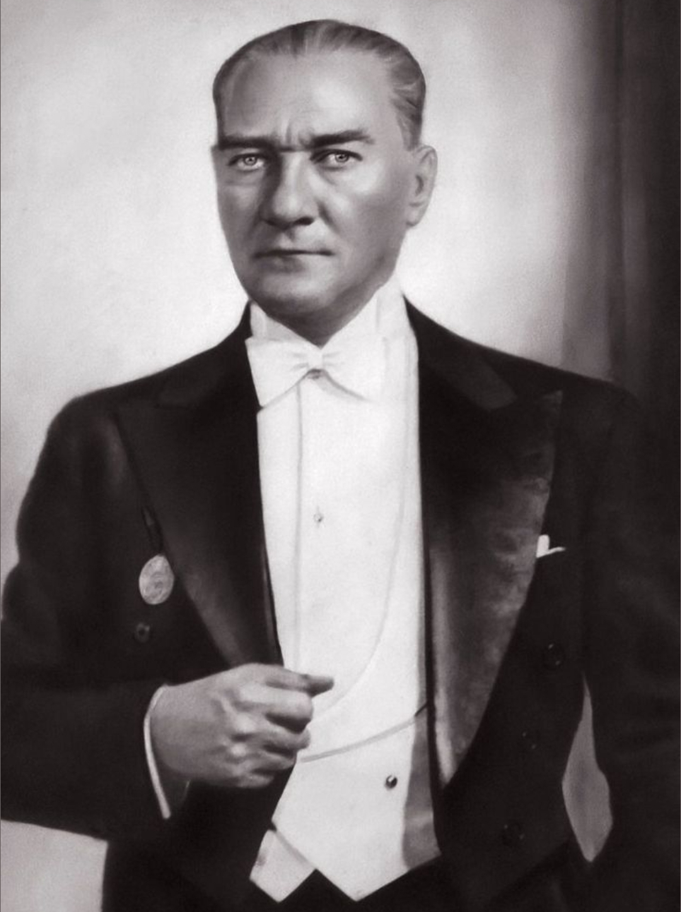
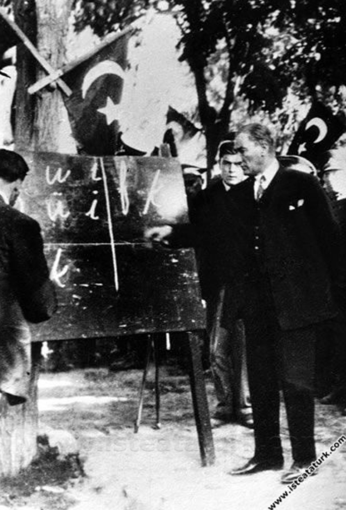
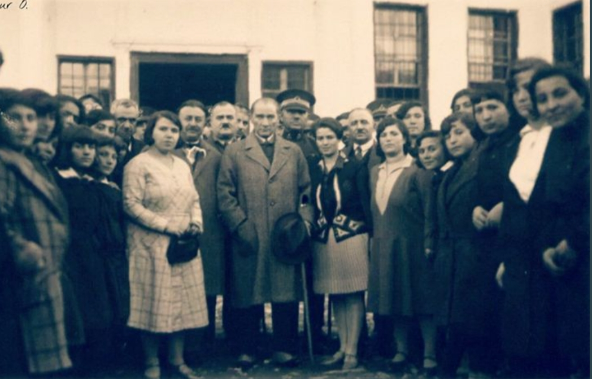
4. Atatürk İlkeleri
Atatürk'ün düşünce sisteminde Cumhuriyetçilik, Milliyetçilik, Halkçılık, Devletçilik, Laiklik ve İnkılapçılık olmak üzere altı temel ilke bulunur. Bu ilkeler, yeni Türk devletinin yönetiminde ve toplumun gelişmesinde yol gösterici olmuştur.
Cumhuriyetçilik, egemenliğin millete ait olmasını ve halkın yönetime katılmasını esas alır. Milliyetçilik, milletin bağımsızlığına, birlik ve beraberliğine önem verir. Halkçılık, kanun önünde eşitliği ve toplum yararını savunur. Devletçilik, ekonomik kalkınmada devletin gerektiğinde etkin rol üstlenmesini ifade eder. Laiklik, devlet ve hukuk düzeninin din kurallarından bağımsız biçimde düzenlenmesiyle ilişkilidir. İnkılapçılık ise çağın ihtiyaçlarına uygun yeniliklerin sürdürülmesini amaçlar.
Atatürk Bilgi Testi
Testi yapan: Halil Alkayış
Toplam 10 soru vardır. Her soru 10 puandır. Bir şıkkı seçtiğinde cevabın hemen değerlendirilir. Seçtiğin cevabı değiştiremezsin. Testi baştan çözmek için en alttaki "Tekrar Çöz" düğmesine bas.